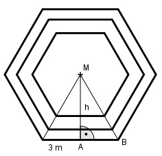

Aufgabe 209 Die Grundflächen eines dreistöckigen Pavillons sind regelmäßige Sechsecke. Wie groß sind die Seiten der nächsten Etagen, wenn die Grundseite 3 m beträgt und die Sechsecke jeweils 0,5 m zurückspringen?

Satz von Pythagoras im Dreieck ABM: 3 3 32 = h2 + (---)2 | -(---)2 2 2 9 – 2,25 = h2 h2 = 6,75 |√ h = 2,6 cm Satz von Pythagoras im nächst kleineren Dreieck mit der Seitenlänge s1: s1 s1 s12 = (h – 0,5)2 +(----)2 | -(----)2 2 2 s12 s12 - ---- = 2,12 4 3 --- s12 = 2,12 |*4 4 3s12 = 4 * 2,12 |:3 s12 = 5,9 |√ s1 = 2,4 m Satz von Pythagoras im nächst kleineren Dreieck mit der Seitenlänge s1: s2 s2 s22 = (2,6 – 1)2 +(---)2 |-(---)2 2 2 s22 s22 - ---- = 1,62 4 3 --- s22 = 1,62 | *4 4 3s22 = 4 * 1,62 | :3 s22 = 3,4 |√ s2 = 1,8 m